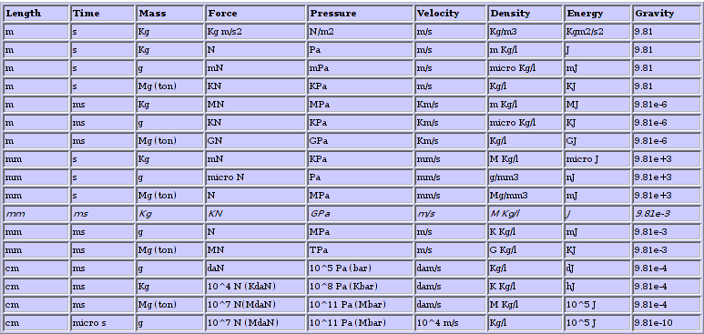

GiD to Impact Interface Manual |
Impact can handle any unit of indata as long as the user is consistent between the different types. The following table summarizes possible combinations for SI units, but similar principles also works for any other units:
GiD to Impact interface, however, uses units shown in italic.
